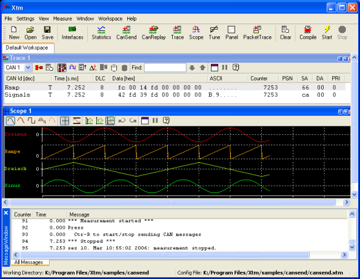
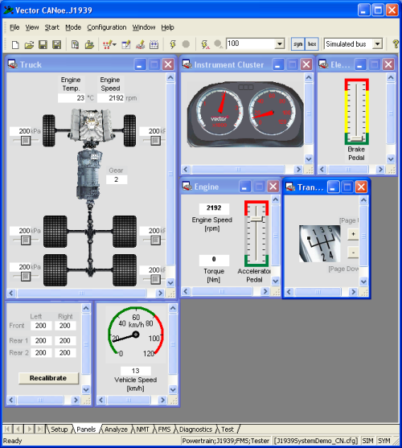
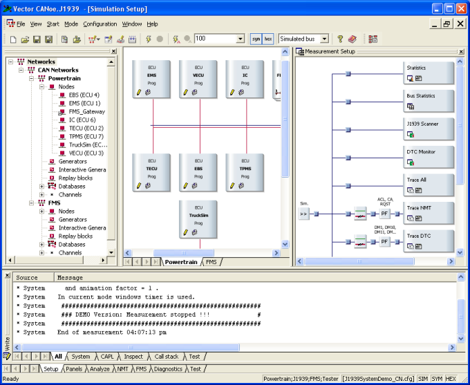

Chapter 4
J1939.c CAN Bus plus RS232 (continued)
CAN bus software emulators
<<back to main page| Abstract
of
the 1rst
chapter: Microchip provided source code  for J1939.c
CAN library for J1939.c
CAN library  (Kim
Otten et al.), plus Application Maestro generated
code UARTIntC.c, were used to implement a bare-bones system
with a 2-node CAN bus, where node #129 upon receiving commands from
#128
to toggle a LED also output strings "ON" and "OFF" thru the RSR23. (Kim
Otten et al.), plus Application Maestro generated
code UARTIntC.c, were used to implement a bare-bones system
with a 2-node CAN bus, where node #129 upon receiving commands from
#128
to toggle a LED also output strings "ON" and "OFF" thru the RSR23.Abstract of the 2nd chapter: We kept the 2 nodes #128 and #129 exchanging messages, and added a 3rd node, #130, listening to them, and reporting to the PC. Everything addressed to our smart node #130 was send to our PC's Terminal program, dumping the affected RxBuffers to the UART. Abstract of the 3rd chapter: Our smart node #130 was put in ListenOnly mode, all masks to zeros - a true "spy", now. But because the firmware J1939.c generates so few messages, the overall result is not much exciting. |
So we want to improve it, but that means going deeper into understanding the SAE J1939 protocol (automotive, commercial vehicles, etc.).
We could use some help in that, and luckily there are at least 2 free "demos" available which we can use.
- General info about the SAE J1939 protocol
- Two nice tools - which one shall we use?
- Simulating NA930 J1939.c CAN library in Vector's CANoe
- What's next?
General info about the SAE J1939 protocol
When "googling" SAE + J1939 + protocol, more then 21000 hits result.The recomended path is to buy or borrough the original SAE J1939 specs, which run like this:
| Core J1939 Standards | |
|---|---|
| J1939 --- | Recommended Practice for a Serial Control and Communications Vehicle Network Revised JAN 05 |
| J1939-01 | Recommended Practice for Control And Communications Network for On-Highway Equipment |
| J1939-11 | Physical Layer - 250k bits/s, Twisted Shielded Pair |
| J1939-13 | Off-Board Diagnostic Connector Revised MAR 04 |
| J1939-15 | Reduced Physical Layer, 250K bits/sec, Un-Shielded Twisted Pair (UTP) |
| J1939-21 | Data Link Layer |
| J1939-31 | Network Layer Revised APR 04 |
| J1939-71 | Vehicle Application Layer Revised DEC 04 |
| J1939-73 | Application Layer - Diagnostics Revised MAR 04 |
| J1939-74 | Application - Configurable Messaging Revised SEP 04 |
| J1939-75 | Application Layer - Generator Sets and Industrial |
| J1939-81 | Network Management |
They cost about USD 60 each.
They also have a few Technical Papers-$12 each, like:
| Also Included: Related Technical Papers | |
|---|---|
| 931809 | J1939 High Speed Serial Communications, the Next Generation Network for Heavy Duty Vehicles |
| 940361 | CAN Controller Architecture Optimized for SAE J1939 Applications |
| 950043 | Development Tools for SAE J1939 Networks on Tractors |
| 972757 | J1939 Serial Vehicle Network Explanation and Tutorial |
| 972758 | System Level Testing Using the J1939 Datalink Adapter |
| 972759 | Dynamic Address Configuration in SAE J1939 |
| 1999-0 1-2840 |
Large-Scale Application of J-1939 CAN |
The "Also included" I guess means that you can take a single user, one-year subscription $595 (ouch!) for the whole lot, which is really cheaper than to buy one by one .
Notice that J1939-1x covers the OSI 1rst layer, J1939-7x covers the 7th layer etc..
If you don't feel like giving up your hard-earned money for so exotic fare, resort to reading what you can find in the net, and with lots of patience you will become more and more familiar with J1939.
My favorites (because they have already some digested info) are:
High Speed Networking in Construction and Agricultural Equipment an overview of J1939,
Dynamic Address Configuration in SAE J1939 which describes the address claim message process
(if you look around the above URLs you will find some other interesting papers)
(SAE) Implementation of CAN for Heavy Duty Truck and Bus
Market -- Specification J1939
From Kvaser: J1939 Tutorial
From Vector Informatik GmbH you can download several appNotes etc., like:
AN-ION-1-3100_Introduction_to_J1939.pdf (I cannot give a direct link, you must go to their download page and tick the downloads you request, register and then proceed to download).
Also the help files for CANoe (see below) and sample databases have much info.
By the way, some weeks ago I asked Vector for some printed materials, which they very kindly mailed to me, including their celebrated CAN message structure colorful wall chart. Great service .
But after going thru lots of docs, one can grow a bit disenheartened... the J1939 protocol is complex, and to understand it, one must become able to emulate it either with pencil and paper, or writing C code, or using a software emulator, or...
Wait - an emulator? is there such a thing? and if yes, is it very expensive?
The good news: we found 2 software emulators, and both have free demos (if you know of any other one, please let us know).
Two nice tools - which one shall we use?
Michael Eisele's Xtm "is a software environment used to control embedded network nodes (electronic control units). It can also be used to display and modify the inner states of that network nodes. Moreover it's possible to visualize the communication of embedded network nodes, to analyze it and, if required, to replace missing network nodes by simulation its network behaviour."
The current demo version 3.7 (Aug 03 2005) is available here.
Xtm V3.7, 03 Aug 2005, approx. 3,5MBWe tried it, and we think it can be used the way we intend: to simulate a J1939 CAN network, without any actual hardware running (just a virtual network of virtual devices).
Here is a screen shot of Xtm:

For us the Trace window is the most interesting, as it displays the messages data contents.
Reading the help files and studying the samples did not take us very far, therefore we tried and request some guidance from Michael. So we hope to be back to Xtm soon.
Now to the second simulation tool.
Vector Informatik GmbH lets you download a simulation (much more than just that, but this is what we are interested on now) tool CANoe.exe (5.2).
Again, you must go to the downloads page, tick the appropriate items - look for DEMO CANalyzer/CANoe 5.2 (2005-11-02), register and proceed to download (about 150MB):
Fully
functional
demo including CAN, LIN, MOST, FlexRay, J1939, and J1587. The only
limitation is that access to any hardware interface is not possible.
When installing, choose J1939 where appropriate.
When installing, choose J1939 where appropriate.
You may want to download the last service pack: CANalyzer/CANoe 5.2 SP2 (2006-03-07, about 120MB), altough it is not strictly necessary (it adds GPS support - nice touch!).
This is a hefty tool, and we will just confine our efforts to creating a simulation of our "old" AN930 J1939.c CAN library. If we manage that, we will be very happy for a while .
In the end, we choose to use Vector's CANoe because it is very complete, already incorporates a ready-made J1939 data base, and as Vector works for several automotive companies, we guess we can use their simulator as a sort of "validator" for our J1939 network design.
Here are screen shots of CANoe panels and setup windows:

and CANoe setup window:

Simulating NA930 J1939.c CAN library in Vector's CANoe
1 - getting to know Vetcor's CANoe
After installing CANoe, we looked in the Samples, and they have one called "AddressClaiming".The comments read:
Address claiming |
Looks like a good starting point.
So we copy 2 folders from:
Program Files\CANoe 5.2\Demo_J1939_CN\Database
Program Files\CANoe 5.2\Demo_J1939_CN\MoreExamples\AddressClaiming
To our project folder; then with a text editor, we edited AddressClaiming_CN.cfg to point to the new path of Database\J1939.dbc, and the new project (until now, just a copy of AddressClaiming) opens without errors.
Let us start by having a look at Database\J1939.dbc, as it can be quite instructive.
2 - Database\J1939.dbc
Going back to SAE J1939-71 Vehicle Application Layer, it describes lots and lots of Suspect Parameter Numbers starting with spn16 - Fuel Filter (Suction Side) Differential Pressure (see also SPN 1382) and goes on until (260 pages later...) spn2806 - FMS-standard SW-version supported.Then comes the parameter groups definitions, from pgn0 - Torque/Speed Control 1 - TSC1 up to (100 pages later...) pgn65279 - Water in Fuel Indicator - WFI.
This long lists must have consumed n-man-years of the SAE committee!
Fortunately for us, if you open CANoe\tools\CANdb++ editor and have a look at Database\J1939.dbc, you will find (they are sorted alphabetically) correspondingly:
...
EngFuelFilterSucSideDiffPress SPN1382
...
FMSstandardSWversionSupported
...
(Torque/Speed Control 1 - TSC1 under desguise)
...
WaterInFuelIndicator SPN97
... each item with a full description according to SAE J1939-71.
This database alone can save you several years of your life, it you are about to learn J1939 !
But now let us make a short break, leaving you to study thouroughly the database..
What is next?
We will go deeper into the simulation environment of Vector's CANoe, as a way of learning the SAE J1939 protocol.Our goal is to simulate our skelectical system with 3 nodes, adding more and more messages, validating them with CANoe and then porting to the firmware.
Stay with us, may be we will get somewhere!
And that's all, folks.
Please let me know of any broken links, missing parts etc. you may find here.
Next issues will become more sophisticated - I hope!.
<<back to main page
©Rec (recursos.pt@gmail.com)
06-03-16